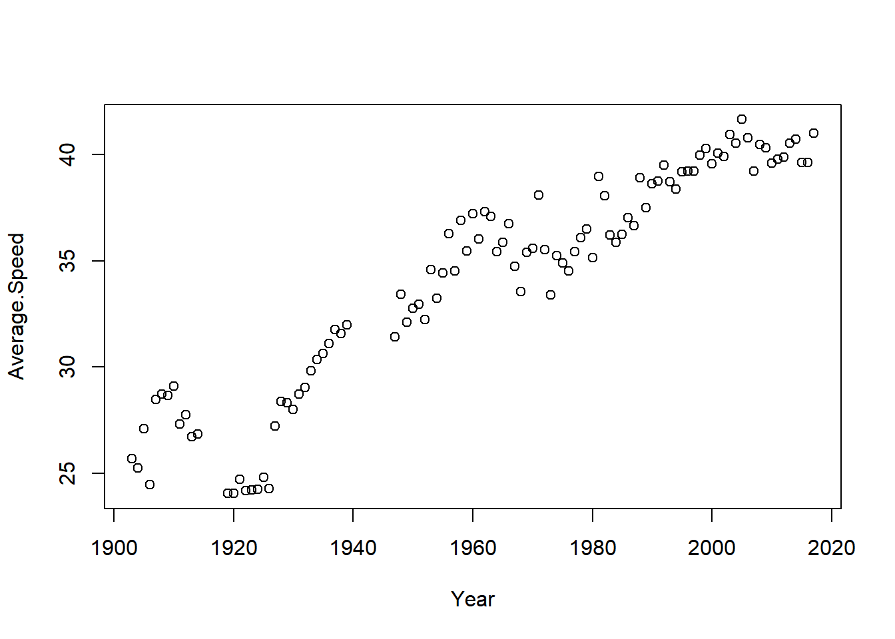

#install.packages("openxlsx") # Installs the openxlsx package. Do it only once.
library("openxlsx") # loads the openxlsx package. Do it once per R session.Warning: package 'openxlsx' was built under R version 4.2.2Data often come in the form of Excel files, usually named SomeData.xls or SomeData.xlsx, where SomeData is the name that you or someone else have given to the file. Excel stores data as tables with rows and columns, like this:

Excel files may contain more than one dataset, organized as Excel sheets. Here is an example (note the multiple sheets at the bottom):
There are many R packages for reading data from Excel. We will be using the openxlsx package here. This installs and loads the openxlsx package:
#install.packages("openxlsx") # Installs the openxlsx package. Do it only once.
library("openxlsx") # loads the openxlsx package. Do it once per R session.Warning: package 'openxlsx' was built under R version 4.2.2I have commented out the installation of the package by putting a # sign in front of the command install.packages("openxlsx"). So this command will not be executed/run. I already have that package installed on my computer and don’t want to re-install it. You have to uncomment, that is remove the sign #, before running this on your computer, if you haven’t installed this package already.
tour_de_france <- read.xlsx('Tour_de_France_2017.xlsx', sheet = 1)The argument sheet=1 tells R to read data from the first sheet in the Excel file. If you want to the read data from the third sheet in an Excel file, then just replace 1 with 3 (the Tour de France data has only one sheet, however).
I placed the file Tour_de_France_2017.xlsx in my working directory. If the file with data is at a different place on your computer then you need to include the search path to the file before the file name. For example, on a computer running Windows, if your data is stored in the Documents folder, then replace the command above with
tour_de_france <- read_excel('C:\Documents\Tour_de_France_2017.xlsx', sheet = 1)
Rather than telling R explicitly where your data are stored, you can also use the command
tour_de_france <- read.xlsx(file.choose(), sheet = 1)
which will open up a window where you can look up the file in your file explorer and it will then read the first sheet (again the 1 in the command) of that file. This is convenient, but I don’t recommend it (lousy tip! 🙄) since you then have to click your way to the file everytime you re-run your R code.
We have now read the dataset into a variable that I have chosen to call tour_de_france. We can now just type the name of this variable in the Console in R to see the data. The dataset contains many observations so it would be a long printout. A better way to get a quick look at the data, is to use the head command, showing only the first few observations of the dataset:
head(tour_de_france) Year Winner Country Age Team
1 1903 Maurice Garin France 32 La Fran<U+FFFD>aise
2 1904 Henri Cornet France 20 Cycles JC
3 1905 Louis Trousselier France 24 Peugeot
4 1906 Ren<U+FFFD> Pottier France 27 Peugeot
5 1907 Lucien Petit-Breton France 24 Peugeot
6 1908 Lucien Petit-Breton France 25 Peugeot
Total.Time(h.min.sec) Total.Time(h) Average.Speed Stages
1 94.33.00 94.55000 25.679 6
2 96.05.56 96.09889 25.265 6
3 110.26.58 110.44944 27.107 11
4 189.34.00 189.56667 24.463 13
5 158.45.05 158.75139 28.470 14
6 156.53.29 156.89139 28.740 14
Total.Distance.Ridden Starting.Riders Finishing.Riders
1 2428 60 21
2 2428 88 27
3 2994 60 24
4 4637 82 14
5 4488 93 33
6 4488 112 36Note that some accented letters like é were replaced by a question mark. The variable tour_de_france is a table of a specific type called dataframe, which is R’s main way of storing a table.
You can now start analyzing the data in different ways, perhaps plotting the average speed variable over the year that Tour de France has run:
plot(Average.Speed ~ Year, data = tour_de_france)
The average speed has increased over the year. Notable exceptions are the years during following the first world war.
Data may also come as a pure text file, often with the file ending .txt. Such files contain a simple table with the data. The first row may or may not contain the names of the variables in the columns. The columns are separated by a separator, typically a comma (,) or a TAB (blank space of a certain width). Here is an example with data from Indy car drivers:

Note how the columns are not nice aligned, but clearly separated by blank space (TAB) so that R can understand which numbers belongs to which variable (column). Note also that the first row contain the variable names: Year, Winner, Chassis, Engine, Speed, Time_hrs and Distance.
Let’s read this text file with data into R using the built-in function read.delim
indy <- read.delim('Indy_500_2018.txt', header = TRUE)
head(indy) Year Winner Chassis Engine Speed.computed Time_hrs Distance
1 1911 Ray Harroun Marmon Marmon 74.60212 6.702222 500
2 1912 Joe Dawson National National 78.71950 6.351667 500
3 1913 Jules Goux Peugeot Peugeot 75.93335 6.584722 500
4 1914 Rene Thomas Delage Delage 82.47423 6.062500 500
5 1915 Ralph DePalma Mercedes Mercedes 89.84049 5.565419 500
6 1916 Dario Resta Peugeot Peugeot 84.00093 3.571389 300where the argument header = TRUE tells R that the first row in the dataset contains the names of the variables in the data.
Finally, a very common file format is csv , which stands for comma-separated values. These are similar to txt files, but are read into R using the built-in read.csv function.
Both the read.delim and read.csv have an argument sep that can be used to specify which delimiter is used in the file. For example, a txt files where the columns are separated by a comma instead of TAB can be read by the command:
my_data <- read.delim('myfile.txt', sep = ",", header = TRUE)